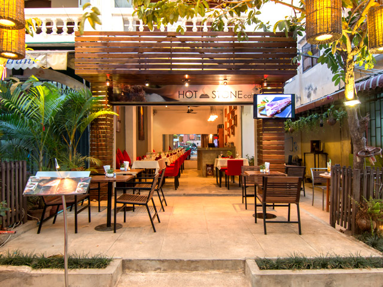

<!--
  Generated template for the ResturantSearchPage page.

  See http://ionicframework.com/docs/components/#navigation for more info on
  Ionic pages and navigation.
-->
<ion-header>

    <ion-toolbar no-border-top>
      <ion-searchbar [(ngModel)]="term" showCancelButton="true">
      </ion-searchbar>
    </ion-toolbar>
  </ion-header>


<ion-content padding >
    <ion-refresher (ionRefresh)="doRefresh($event)">
        <ion-refresher-content
        pullingIcon="arrow-dropdown"
        pullingText="Pull to refresh"
        refreshingSpinner="circles"
        refreshingText="Refreshing...">
      </ion-refresher-content>
     </ion-refresher>
  

    <div>
        <ion-card class="custom-card danger" *ngFor="let item of items |filter:term" (click)="moreInfo(item.$key, item.name, item.phone, item.location)">
            <div class="custom-card-label" >
                <div class="custom-card-label-text">
                 {{item.location}}
                </div>
              </div>
              <div class="img1">
                  <div class="img2">
                      
                  </div>
                </div>

            <ion-card-content class="pos1">
              <div class="pos2">
                <ion-card-title>
                    {{item.name}}
                </ion-card-title>
                <p> <ion-icon class="shapeIcone changeColor" name="call-outline" item-start></ion-icon> {{item.phone}} </p>
              </div>
            </ion-card-content>
          </ion-card>
  </div>


</ion-content>

            <!-- <button ion-button color="dark" (click)="moreInfo(item.$key, item.name, item.phone, item.location)">Details</button> -->
